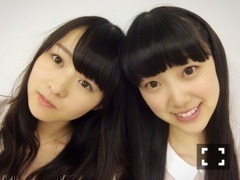
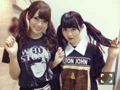
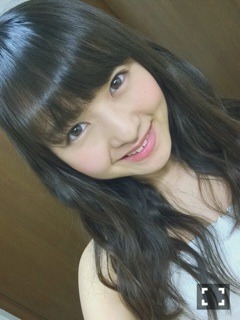

| 2014/07 15 Tue | ジョルネの匂い。584 回目 |

乃木どこテスト22位のふたり
......
六本木ブルーシアターでの
アンダーライブ7公演終了。
参加したユニット曲は
やさしさとは
でこぴん
孤独兄弟
伊藤ちゃんずの孤独兄弟復活！
嬉しかったーねねちゃんねねちゃん
プリンシパルコント
13日の夜の部できいちゃん純奈と
「監督」をやりました。
アンダーライブを通して
二期生との距離が縮まり嬉しいなー
この3公演はちょうど
12日にMステ、13日にTHE MUSIC DAY
同じ日に選抜メンバーも活動してて
嬉しいというかなんというか。
選抜メンバーがメディアで
頑張ってるから
私たちもライブができているんだ。
感謝の気持ち。
こうして7公演やってきて、
だいぶ変わった気がします。
まだ課題だらけだけど。
何より楽しいです。
歌うことが楽しい。
ありがとう六本木ブルーシアター
スタッフのみなさん
来てくださったファンの皆さん
25日26日
渋谷AiiAシアターで全て出し切る！
......
次の日はパシフィコ横浜で
個別握手会でした〜
1部2部

ベージュのでろんでろんタンクトップ
FRAPBOIS
ジーンズ JOURNAL STANDARD
サンダル GAIMO
メンバーから褒められた服装！
3部4部
古着のメンズTシャツを
ワンピースにした。
それにつけ襟した！しつこいつけ襟

ツインテール。
でこぴんはまいやんポジ
やらせていただいたあ
赤のポンチョ！
あの衣装レトロで可愛い。
ちなみに孤独兄弟は奈々未ポジ。

来週のアンダーライブ
絶賛ユニットリクエスト募集中。
今日が締め切りです。
ぜひ投票してくださいっ
まりか
コメント(476)
2014/07/15 13:48